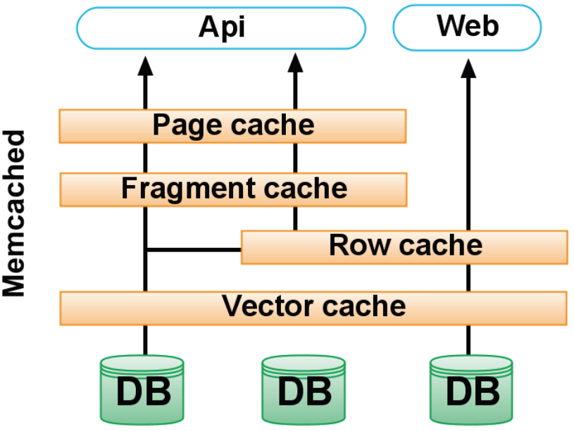
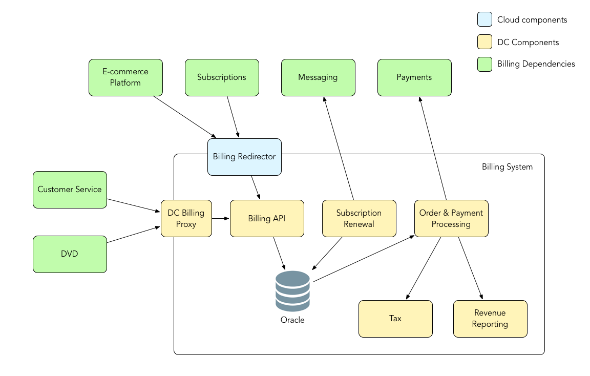
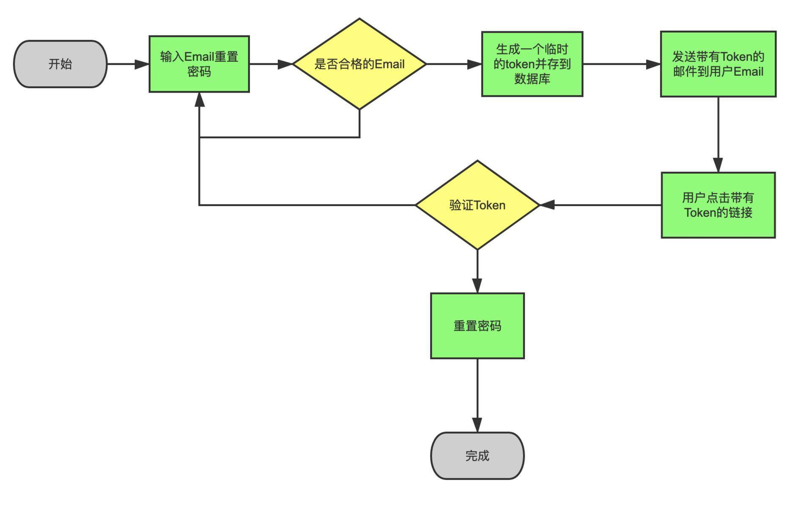
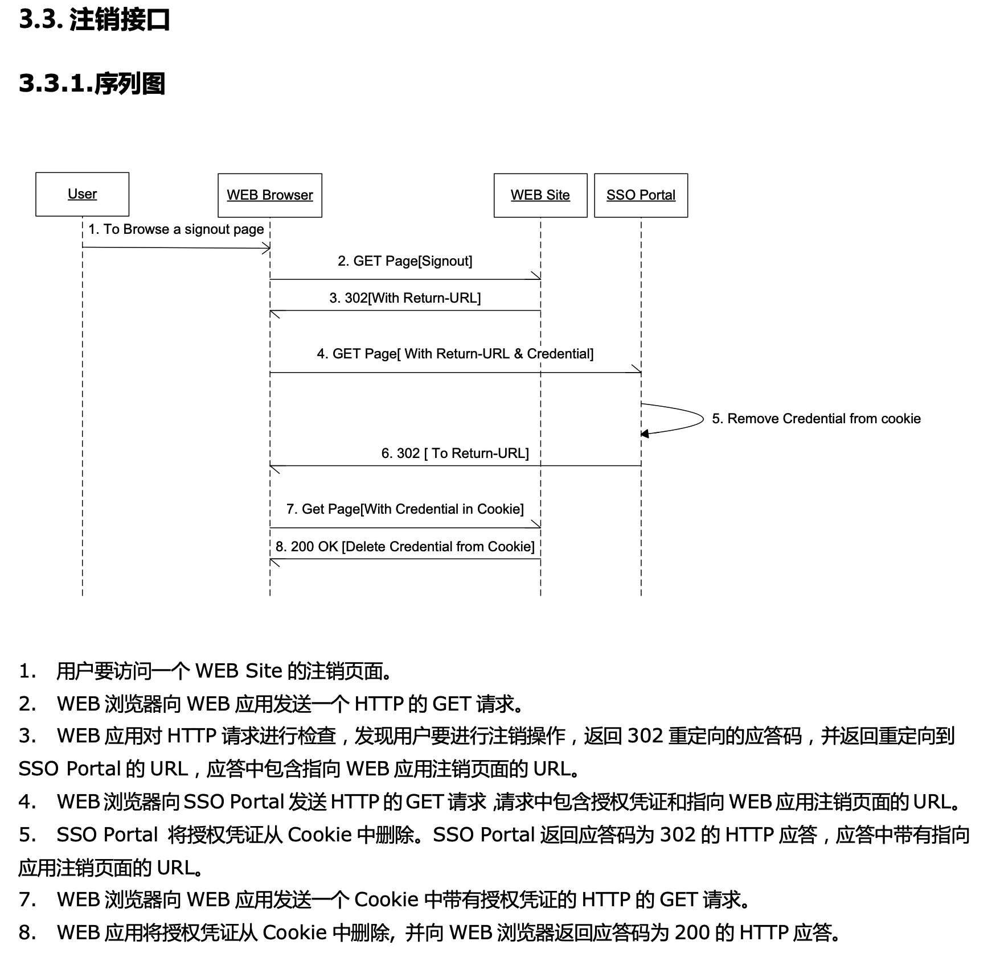

- 00 开篇词 你为什么应该学好软件工程？.md.html
- 01 到底应该怎样理解软件工程？.md.html
- 02 工程思维：把每件事都当作一个项目来推进.md.html
- 03 瀑布模型：像工厂流水线一样把软件开发分层化.md.html
- 04 瀑布模型之外，还有哪些开发模型？.md.html
- 05 敏捷开发到底是想解决什么问题？.md.html
- 06 大厂都在用哪些敏捷方法？（上）.md.html
- 07 大厂都在用哪些敏捷方法？（下）.md.html
- 08 怎样平衡软件质量与时间成本范围的关系？.md.html
- 09 为什么软件工程项目普遍不重视可行性分析？.md.html
- 10 如果你想技术转管理，先来试试管好一个项目.md.html
- 11 项目计划：代码未动，计划先行.md.html
- 12 流程和规范：红绿灯不是约束，而是用来提高效率.md.html
- 13 白天开会，加班写代码的节奏怎么破？.md.html
- 14 项目管理工具：一切管理问题，都应思考能否通过工具解决.md.html
- 15 风险管理：不能盲目乐观，凡事都应该有B计划.md.html
- 16 怎样才能写好项目文档？.md.html
- 17 需求分析到底要分析什么？怎么分析？.md.html
- 18 原型设计：如何用最小的代价完成产品特性？.md.html
- 19 作为程序员，你应该有产品意识.md.html
- 20 如何应对让人头疼的需求变更问题？.md.html
- 21 架构设计：普通程序员也能实现复杂系统？.md.html
- 22 如何为项目做好技术选型？.md.html
- 23 架构师：不想当架构师的程序员不是好程序员.md.html
- 24 技术债务：是继续修修补补凑合着用，还是推翻重来？.md.html
- 25 有哪些方法可以提高开发效率？.md.html
- 26 持续交付：如何做到随时发布新版本到生产环境？.md.html
- 27 软件工程师的核心竞争力是什么？（上）.md.html
- 28 软件工程师的核心竞争力是什么？（下）.md.html
- 29 自动化测试：如何把Bug杀死在摇篮里？.md.html
- 30 用好源代码管理工具，让你的协作更高效.md.html
- 31 软件测试要为产品质量负责吗？.md.html
- 32 软件测试：什么样的公司需要专职测试？.md.html
- 33 测试工具：为什么不应该通过QQ微信邮件报Bug？.md.html
- 34 账号密码泄露成灾，应该怎样预防？.md.html
- 35 版本发布：软件上线只是新的开始.md.html
- 36 DevOps工程师到底要做什么事情？.md.html
- 37 遇到线上故障，你和高手的差距在哪里？.md.html
- 38 日志管理：如何借助工具快速发现和定位产品问题 ？.md.html
- 39 项目总结：做好项目复盘，把经验变成能力.md.html
- 40 最佳实践：小团队如何应用软件工程？.md.html
- 41 为什么程序员的业余项目大多都死了？.md.html
- 42 反面案例：盘点那些失败的软件项目.md.html
- 43 以VS Code为例，看大型开源项目是如何应用软件工程的？.md.html
- 44 微软、谷歌、阿里巴巴等大厂是怎样应用软件工程的？.md.html
- 45 从软件工程的角度看微服务、云计算、人工智能这些新技术.md.html
- 一问一答第1期 30个软件开发常见问题解决策略.md.html
- 一问一答第2期 30个软件开发常见问题解决策略.md.html
- 一问一答第3期 18个软件开发常见问题解决策略.md.html
- 一问一答第4期 14个软件开发常见问题解决策略.md.html
- 一问一答第5期 22个软件开发常见问题解决策略.md.html
- 学习攻略 怎样学好软件工程？.md.html
- 特别放送 从软件工程的角度解读任正非的新年公开信.md.html
- 结束语 万事皆项目，软件工程无处不在.md.html
16 怎样才能写好项目文档？
你好，我是宝玉，我今天分享的主题是：为什么你不爱写项目文档？以及怎样才能写好项目文档？
我以前看过一个投票，盘点程序员不喜欢的事，有两条和文档相关：
不喜欢写文档；
不喜欢项目文档太少。
看起来很矛盾，却很现实。基本上大家都认同：“项目文档很重要”，然而我们在项目中总是短期高估文档的重要性，而长期低估文档的重要性。
结果就是口号喊的很响：要重视文档、要写好文档、要多写文档，然而随着项目的推进，总有比文档优先级更重要的任务，文档的优先级总是被有意无意推迟，导致项目的文档缺失、老旧、无人维护。
那么为什么程序员都不爱写文档呢？我总结了一下大致有下面这些原因。
- 不知道怎么写
不知道怎么写文档的应该占很大一部分比例。
- 太忙没时间写或者懒得写
程序员确实很忙，但总有不那么忙的时候，却也很少见有人利用这时间去写文档。包括我自己也这样，有时候没那么忙的时候，宁可去想想怎么重构下代码，却很少会愿意去写文档，主要还是太懒。
- 因为是敏捷开发，所以不用写文档？
对于这个问题，我其实反驳过多次，敏捷宣言最后一句话明确指出：“尽管右项有其价值，我们更重视左项的价值。”也就是说敏捷从来没有否认文档的价值，只是更重视“工作的软件”罢了。
为什么要写文档？
写文档，其实对个人、对项目、对团队，都是非常重要的事情。
- 帮助写文档的人理清楚思路
我想你应该有这样的感受：写作的过程，就是一个思考的过程。
写文档，可以让你在写代码之前，梳理清楚思路，想清楚整体结构，比如说有哪些工作是重点难点；哪些要依赖其他人，需要及早协商的；哪些是要考虑安全性的。
如果上手就写代码，就很容易陷入到某个技术细节中，而忽略了整体结构。写的时候才发现一个技术难点无法解决，或者已经在某个不重要的细节上浪费了很多时间；或是发现有些依赖其他人提供的服务还没准备好；又或者是上线后才发现有安全漏洞。
**先写文档，就会抛开代码细节，去站在全局思考。**写的时候，各个模块之间的依赖关系、各种可能的安全隐患、各种可能需要其他人配合的地方，就都冒出来了，必须要去查资料，去找人讨论，反复缜密的思考后最终写出来。
有人觉得自己写作不行，所以不会写文档。写作不行，只是让你在用词遣句上会有所欠缺，而这不是写文档的真正障碍。
真正的障碍是没想清楚，在心中只有一些未成型的混乱的想法和概念，必须要努力把这些模糊的想法确定化和具体化，才能写出来。
换个角度来说，如果你连文档都写不出来，那又怎么能指望代码写得好呢？
- 便于未来的维护和交接
“好记性不如烂笔头”，存在脑子里的内容是不可靠的，一个正常的项目组，如果需要长期维护，就需要一定的文档，把设计、操作流程、环境配置等内容记录下来，而不仅仅依赖于口口相传。
我有一个习惯，每到一个新项目组，就会把日常工作中遇到的问题、各种环境配置、一些操作的步骤等，所有以后可能还会用上的都记录下来，其中一些还会整理到团队的 WIKI 上。
一段时间后，这些随手记下来内容都会发挥大作用，对于我来说，很多问题就不需要问第二遍了。对于团队来说，随着人员更替，我记录的这些内容都是最好的一手资料，有新人过来，按照我当初记录的内容，就可以快速上手。
- 便于团队更好的协作沟通
在一个项目组中，大家都有不同的分工，有人负责产品设计，有人负责架构设计，有人负责测试。而文档，就成为了团队成员很好的沟通工具。
比如说产品设计有雏型的时候，会有一个产品设计的评审会议，基于文档，项目成员可以一起参与其中，提出自己的意见和看法。这样就不至于等到产品设计出来之后，大家才对于设计有改进想法或意见，造成无法更改的结果。
当然，写文档还有很多好处，在这里我就不一一列举了。
如何写好文档？
其实文档的重要性真不用多说，很多人也不是不爱写项目文档，而是不知道该如何写好文档。所以在这里我来介绍一下该如何写软件项目文档。
很多人对于写文档是有心理压力，觉得自己写作水平不高，不知道该如何下手。首先你要对文档有一个正确的认识：文档写作，关键是通过文档把你的想法表达出来，至于用词、格式相对都是其次的。
打个比方，我们如果是大厨给餐馆做菜，得追求个宽油大火、色香味俱全，自己在家做饭，就没那么多讲究了，填饱肚子是第一要素，在这个基础上味道好一点就很好了。
我们写文档就像是在家做饭，是不需要追求太多华丽的词藻，也不需要追求字数，只要用简单的文字、图表把想法表达出来，最终在讲解的时候，配合一些口头说明就可以啦，其实比我们上学时写作文容易多了。
下面给你介绍一些具体可行的文档写作方式。
- 从模仿开始
前面有提到，我其实一开始是不知道如何写文档的，直到毕业两年后，我在飞信项目组，领导让我写一个新项目的技术方案文档，我两眼一抹黑说不会写呀，然后领导给了我另一个项目的技术方案文档，说你就“照葫芦画瓢”照着写吧！
“依葫芦画瓢”就简单多了，同时又学习了一下如何画线框图、时序图等图形，很快就完成了一份技术方案文档，再反复修改几次，质量就还可以了。
后来我带团队时，让团队成员写文档，就把当时我写的文档给他们参考，很快他们也能写了。包括后来我写开源项目（angular-ui-tree, react-video），要写英文文档，也是去找了几个同类的开源项目的文档，参照他们的内容和格式，就把文档拼出来了。
模仿就是最好的写文档方式，尤其是现在网上可以参考的例子也很多，当你写文档不知道该如何下手的时候，不妨去找一个类似的文档，模仿着写试试。
- 从小文档开始
一开始写文档，内容不需要很多，可以从小的文档开始。就像前面我提到的，记一些笔记，不要在意格式，一两句话，一些截图，就是不错的笔记。
有一次和同事一起去开会，会上他给另一个组的人介绍了如何调用一个服务，介绍的很详细。我就建议他把刚才介绍的内容写成个小文档，这样下次再有类似会议就可以基于文档来说。
于是他就整理了一个简单的文档，再为别人讲解的时候就基于文档介绍，容易很多。同时，他每次还会再完善一点内容进去。之后再有同类问题时，他直接把文档发给人家就好了，都不需要再专门开会。
项目中很多文档都可以从这样小的内容开始：别人给你讲一个问题的时候记录下来；你给别人讲一个问题的时候记录下来；解决一个技术难题时记录下来方案……
这些记录下来的笔记，稍加整理，就可以是很不错的项目文档。
- 从粗到细，迭代更新
小时候写作文，老师给的最多的建议就是要列提纲，这个建议我小时候当耳边风没怎么听，后来要写项目文档的时候用起来反倒觉得非常实用。
我写一个大一点的文档，都是从脑图开始的，先基于脑图，把基本结构梳理清楚。然后第二步就是写 PPT，PPT 有个好处就是不用太多文字，列个一二三，画几张图，就是个简单的文档，PPT 还有个好处就是可以用来给别人讲解，收集反馈。
写完 PPT，也收集好了反馈，再写正式的文档。先按照脑图列的提纲把主要章节放上去，然后把 PPT 上的内容和画的图放到文档中，一篇文档的骨架就搭好了，剩下的就是对细节的补充了。
为什么我不一开始就写很细的文档呢？
一个原因是太难写，要花很多时间精力，甚至可能写不下去；另一个原因就是在收集反馈的过程中，会有很多修改。写得越细则无用功越多，最后，你甚至会因为不想改文档而抵触不同的意见。
而从粗到细逐步迭代的方式就好多了，一开始的目的是为了梳理清楚思路，只要脑图这种级别的内容就好了，然后进行调整。因为文档很粗，调整也方便，等到基本确定后再写细节，就不会有大的反复。
- 一些基本的画图的技巧
有人说：“字不如表，表不如图，一图胜千言”。这个观点我非常认同，好的图能帮助你简单而直观地把问题说明清楚。
画图其实不复杂，不需要多专业的绘画技巧，也有很多工具软件可以帮助我们简化操作，像 Visio、PowerPoint、Keynote、OmniGraffle 等都是很好的画图软件。平时看到好的图也要注意收集整理，以后自己写的时候，也可以直接参考，可以帮你少走弯路。
写文档的时候，主要有几种图比较常用：线框图、流程图、时序图、各种格式的截图。
- 线框图
线框图是最常用也最实用的一种图形，用简单的方框代替功能、模块、服务等，再用箭头表示关系或者数据流向，非常简单直接。
要画好线框图并不难，主要是要理清楚有哪些模块，以及模块之间的关系是什么。用方框配上文字表示模块，方框之间的连线和箭头表示关系。
看几个例子：
例：Twitter 当年的缓存方案。

图片来源：InfoQ
例：Netflix 的账单系统架构图。

图片来源：Netflix技术博客
- 流程图
流程图是软件项目文档中一种常用图形，可以方便的表示各种不同条件下的逻辑路径。要画好流程图不难，重点是要理清楚逻辑关系，各个关键节点在不同条件下的走向。
例：重置密码流程图。

时序图
时序图也是软件项目所特有的一种图形，可以表示不同对象之间发送消息的时间顺序，尤其在涉及网络通信的文档中特别常用。
画好时序图，关键是要列清楚所有涉及的对象或者服务，以及消息发送的先后顺序。
例：注销登录过程的时序图。

- 各种格式截图
截图也是个非常简单直接的方式，把软件的 UI、交互设计的效果、数据趋势图、数据统计图等直接截图，必要的话配上一些箭头、文字，也可以很好的说明清楚问题。尤其是产品设计文档，经常用到。
上面就是如何写文档的一些具体建议，按照上面说的方法做，写好项目文档不会是多难的事情，你还可以在日后的工作中，不断学习不断改进。
一些关于文档的其他建议
有时候我也看到一些比较极端的情况，就是过于追求文档，项目中要花大量的时间写文档，而很多文档是形式化的，并没有太大意义，可能写完了不会用来讨论，也不会有人看。
所以我是比较认同敏捷宣言观点的：文档很重要，但是工作的软件高于详尽的文档。这里面的平衡很重要。
不需要为代码写很多文档，好的代码格式，良好的注释、完善的单元测试可以很大程度上代替针对代码而写的文档。
Markdown 是一种非常好的文档格式，可以让你更专注于内容上，而不是文档格式上面。
在线文档工具优于离线文档工具，在线文档有很好的版本管理，也更方便多人协作。像 GitHub WIKI、石墨文档、Google Docs、Evernote 等都是非常好的在线文档工具。
对于文档的撰写，要作为一个正规的项目任务进行，安排人、安排时间，放到项目计划中去。就像前面说的“懒得写”文档的情况，一旦把文档当成一个与开发同等重要的任务去执行，就没有借口去犯懒了。
重要的是，文档的写作一样需要多练习，写的越多，就越熟练。
总结
今天，带你一起分析了为什么不爱写项目文档的原因，也解释了为什么写文档很重要。
没时间写或者懒，不能成为不写文档的理由。对于重要的项目文档，就应该加入到日常的开发任务中，把写文档，摆在和设计、开发同等重要的位置。从某种角度来说，写不好文档，代码也很难写好。
针对程序员不爱写项目文档的情况，我也提出了切实可行的写文档的方法。比如说不会写，就可以从模仿别人写的文档开始，然后从粗到细，不断迭代，配合一些图表，就可以写出不错的项目文档。